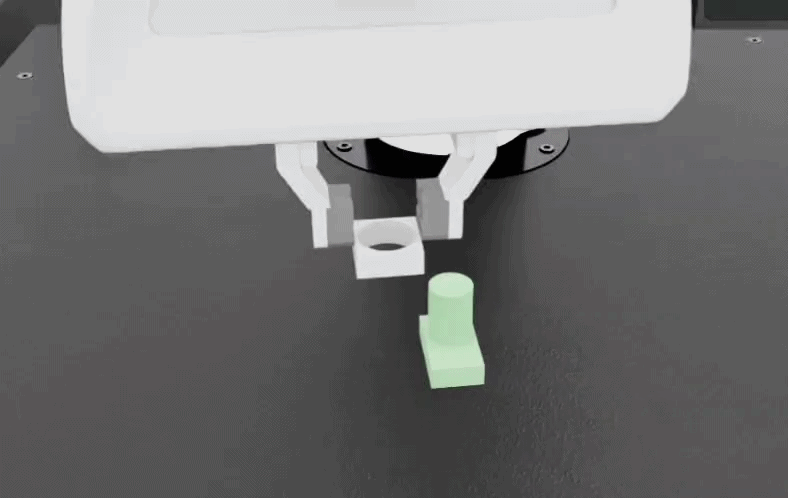

01
Robot Learning for Contact-Rich Assembly
Master’s thesis research
Developed reinforcement-learning policies that use force feedback for contact-rich assembly in Isaac Lab. Compared observation and reward variants, then evaluated robustness under pose uncertainty, corrupted wrench data, assembly clearances, and unseen geometries.
Robot learning internship
Trained PPO manipulation policies with domain randomization and built a deployment workflow using Python, ROS, Docker, and FrankaPy. Integrated pose observations, policy inference, runtime logging, safety checks, and Cartesian impedance control.
